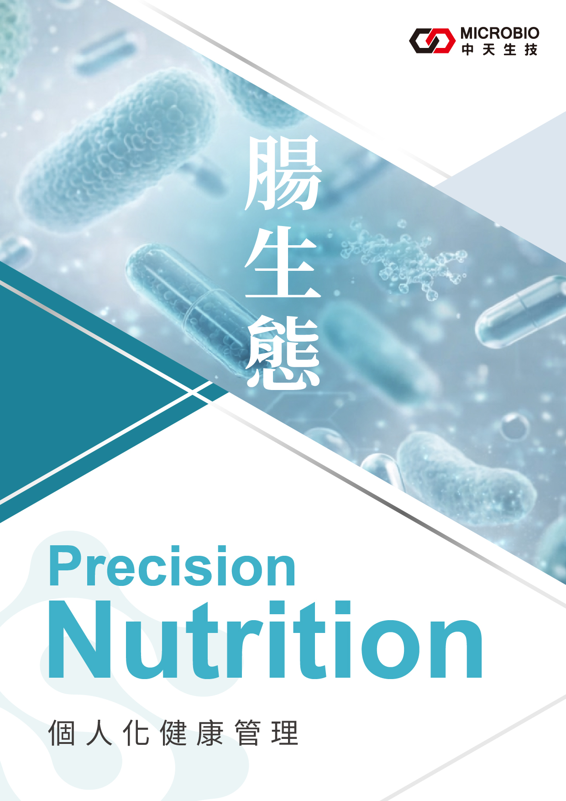
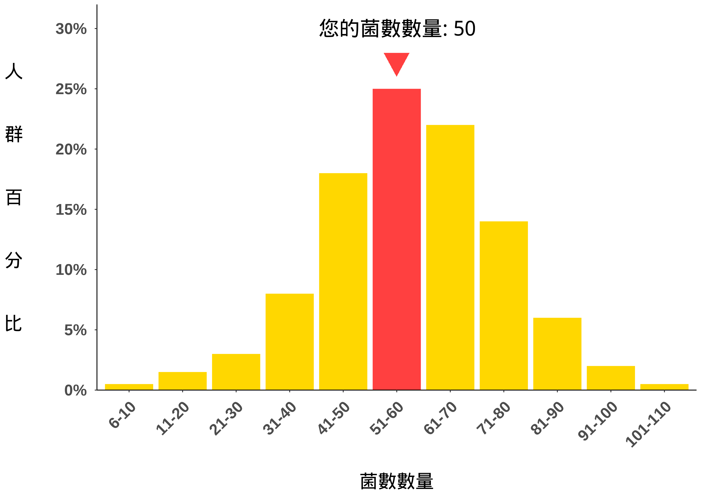
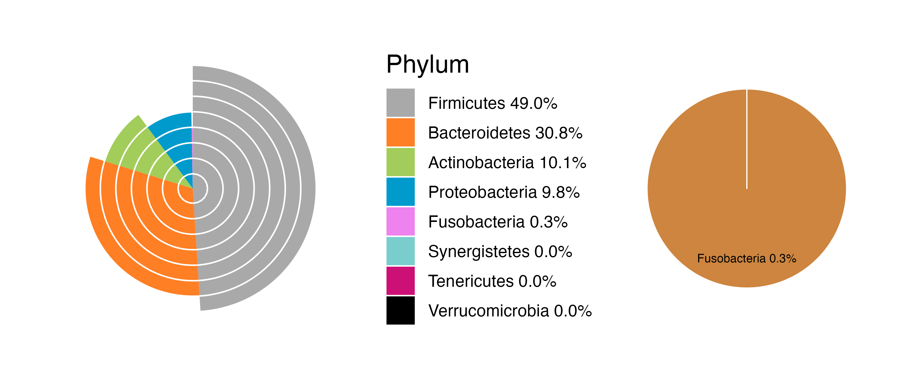
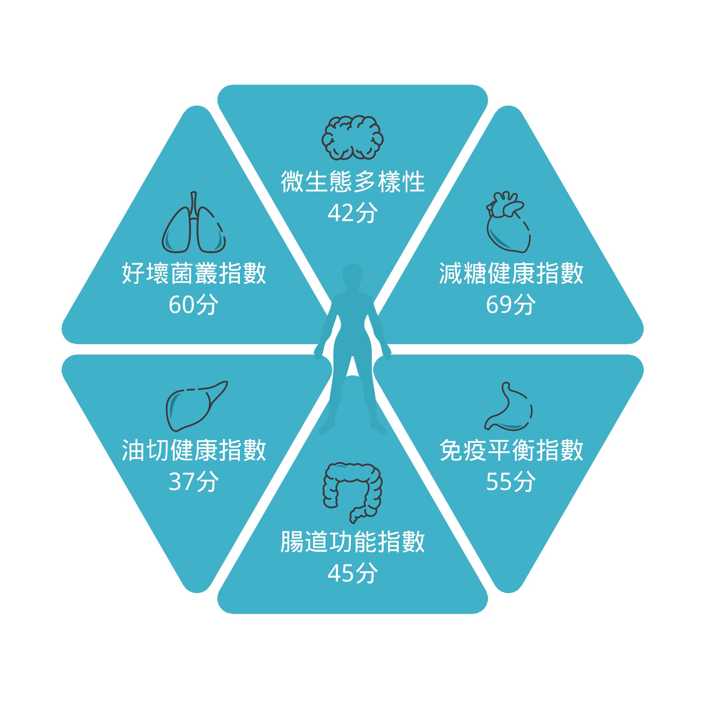
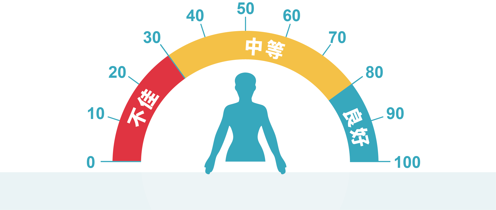
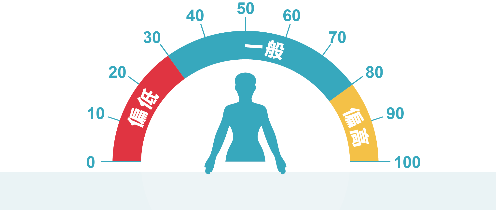
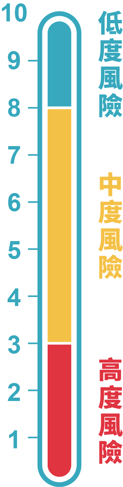
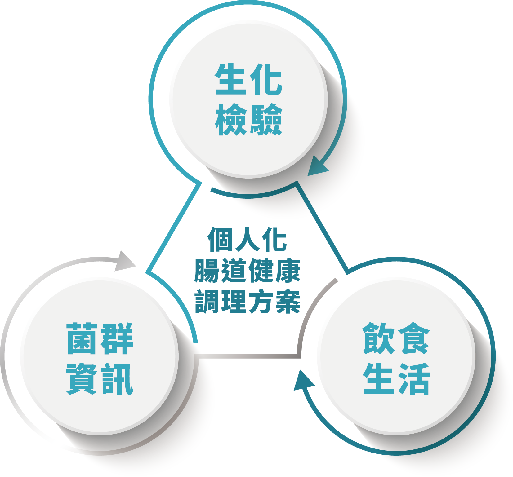

『腸生態健康評估＋腸生態精準調理』是中天生物科技所提供的腸道全方位健康管理方案。不僅利用最先進的次世代基因定序技術，更搭配中天生技獨有的腸道微生態大數據資料庫進行分析，精準地評估您體內的腸道生態健康。
經由解碼您的腸道菌相基因，結合您的血液生化生理檢測數據，透過這些資料，中天生物科技將提供您『個人化腸生態健康管理』策略，整合腸道微生態領域的國際研究成果，搭配本公司所研發的『腸生態精準調理』優質保健產品，長期照護您的身體健康。中天生物科技誠摯地將此產品獻給尊榮的您。
中天生物科技利用模擬人類腸道菌「厭氧共生發酵技術」及「腸道免疫重建平臺」，獨家研發出多種符合個人腸道生態健康所需的優質保健食品。中天生物科技深信，透過『腸生態精準調理』，一定能有效調理您的腸道微生態。
中天生物科技始終相信，腸道是人與生命的關鍵核心。因此，我們乘持「治療疾病，先從腸道著手」的理念，透過調整與優化腸道微生態，協助人們建立更健康的身體狀態。
由於每個人所處的環境、飲食與生活習慣不同，腸道菌相也存在顯著差異。我們因此提出「個人化腸生態健康管理」策略，協助每個人找到最適合自己的飲食營養管理方針；透過閱讀「腸生態健康引導」，一定能有效調理您的腸道微生態。
中天生物科技提醒您，如果有感到任何不適的狀況，請諮詢專科醫師做進一步詳細的檢測。腸道微生態環境是動態變化，本評估僅能呈現您檢測當下，腸道微生態及相關功能風險，無法判斷您是否確實罹患疾病，若有疑慮仍需諮詢專科醫師進行詳細檢查。
親愛的客戶您好：
在您這次的腸道菌相檢測，結果總覽為：
近年研究發現腸道菌群與疾病密切相關。服用中天生物科技的『腸生態精準調理』，可調整腸道菌群，有益腸道健康。
在您這次的腸道菌相檢測結果中，首先在六大核心指數方面顯示「微生態多樣性偏低」，代表腸道內細菌種類較少；菌叢生態平衡失調，可能較容易引發過敏症狀、心血管疾病、糖尿病及腸道發炎等問題；建議您於日常飲食中增加含有菌群飲食物的比例，或提高蔬果攝取量，以提升腸道內的菌種多樣性。
其次，在身體功能評估中顯示「腎功能風險偏高」，表示腸道內參與腎臟功能的菌叢數量狀況不佳，可能導致腎功能退化，可能增加罹患腎臟疾病風險；建議您用藥時須特別注意，同時應少過油膩及辛辣食物的攝取，養成定量的飲食習慣，盡量降低生活壓力，以維持腸道健康。
近年來國際研究文獻指出，腸道菌相與多種疾病具有高度關聯性，因此建議定期進行腸道菌相檢測，掌握菌叢變化狀況；並透過中天生技研發的「中天IA腸生態」助您調整腸道菌叢生態，不僅可改善腸胃功能，亦能促進血液中免疫細胞活化、提升免疫力，使身體維持青春與活力。

中天生物科技利用次世代基因定序技術，同時結合國際微生物資料庫及中天生物科技獨有之資料庫進行驗證，建立了專屬華人的平均菌屬數量分布圖。而研究文獻均證實菌相數量和身體的免疫能力有正相關，數量越多，代表身體的免疫能力越強。
您的個人菌屬數量為56。由資料判斷，您的個人菌屬數量與大多數人相同，穩定但尚有加強的空間。因此建議您可透過服用中天生物科技所研發的「腸生態個人化精準調理」，來提升您的腸道環境多樣性，讓身體能更有力的抵禦外來毒素，維持您身體的健康。
| 檢測數值 | 結果分析 | 評估 |
|---|---|---|
| 1.83 | 偏向厚壁菌門 | 有體重增加趨勢 |
| 檢測數值 | 結果分析 | 評估 |
|---|---|---|
| 100 | 菌群數量平衡 | 腸道菌相穩定 |
B/E比值是指雙歧桿菌屬（Bifidobacterium）和腸桿菌科（Enterobacteriaceae）的比值，目前研究顯示B/E比值反應腸道菌相平衡。若B/E數值大於30，表示腸道菌群處於平衡狀態；但若B/E數值小於30，表示腸道菌群處於失衡狀態，可能會造成腹瀉、過敏或代謝失調等現象。
| 檢測數值 | 結果分析 | 評估 |
|---|---|---|
| 乙酸 | 41.73 % | 合成能力正常 |
| 丙酸 | 30.23 % | 合成能力正常 |
| 丁酸 | 23.47 % | 合成能力正常 |
飲食中人體無法消化分解的膳食纖維，經由腸道中的益菌發酵成為可吸收利用的短鏈脂肪酸。腸道中的短鏈脂肪酸以乙酸、丙酸、丁酸這三種為主，主要功能為提供腸道細胞能量、促進腸道細胞分化、維持腸道粘膜健康與健全益菌生長環境。目前文獻證實丁酸具有調節免疫細胞的功能，為次世代保健食品，透過增加調節性T細胞，使腸道維持健康的免疫狀態；同時丁酸具有促進腸道激素（腸泌素）釋放，達到穩定血糖的作用。
| 檢測數值 | 結果分析 |
|---|---|
| 腸型1 | 您的結果屬於腸型1，腸道內優勢物種為擬桿菌屬（Bacteroides），您的飲食習慣可能偏向肉類，高脂肪高蛋白攝取型態。 |
此類人群，飲食中富含脂肪及蛋白質來獲取所需能量，較易分解碳水化合物及蛋白質，飲食傾向高脂肪及高蛋白攝取。
此類人群，飲食傾向高纖維食物攝取，腸道中富含普氏菌，導致腸道黏液分解，腸道防護力下降，較易有腸道疼痛不適的狀況。
此類腸型人群其腸道中富含瘤胃球菌，瘤胃球菌較易吸收糖分，此類腸型人群較容易增重。

根據對您腸道菌群的檢測，您的腸道內微生物結構分佈如下表：
| 排名 | 細菌菌門 | 比例 | |
|---|---|---|---|
| 1 | Firmicutes | 厚壁菌門 | 56.6% |
| 2 | Bacteroidetes | 擬桿菌門 | 30.9% |
| 3 | Actinobacteria | 放線菌門 | 11.0% |
| 4 | Proteobacteria | 變形菌門 | 1.5% |
| 5 | Verrucomicrobia | 疣微菌門 | 0.0% |
| 6 | Fusobacteria | 梭桿菌門 | 0.0% |
| 7 | Synergistetes | 互養菌門 | 0.0% |
| 8 | Tenericutes | 軟壁菌門 | 0.0% |

中天生物科技利用腸道菌相變化建立六大核心指數。根據您的檢測結果，微生態多樣性偏低，表示您腸道內細菌種類較少，腸道菌叢的生態平衡不穩定，容易引起過敏、代謝性、心血管疾病及腸胃道發炎。

微生態多樣性包括微生物豐富度及均勻度。豐富度代表腸道菌的種類數目，均勻度則代表各個菌種的數量差異。微生態多樣性是代表腸道健康的關鍵指標。透過運動、增加纖維食物攝取，可提高腸道菌群的多樣性，減少疾病風險。

好壞菌叢指標針對腸道內68個好菌及140個壞菌的數量變化進行綜合評分。好菌如益生菌（乳酸桿菌, Lactobacillus）等；壞菌如病原菌（大腸埃希氏菌, Escherichia coli）等。此指數代表腸道好菌與壞菌之間的平衡，如壞菌過多，腸道可能有失衡現象。
減糖健康指數是根據參與醣類代謝的關鍵腸道菌群進行分析。好菌如：艾克曼菌（Akkermansia muciniphila），壞菌如：沃氏嗜膽菌（Bilophila wadsworthia）等。此關鍵菌群決定醣類吸收代謝及熱量燃燒等生理功能。
油切健康指數是根據參與脂肪代謝的關鍵腸道菌群進行分析。好菌如：腸道羅斯拜瑞氏菌（Roseburia intestinalis）等，壞菌如：陰溝腸桿菌（Enterobacter cloacae）等。此關鍵菌群決定脂肪吸收、油脂堆積及脂肪燃燒等生理功能。
免疫平衡指數是根據參與免疫調節的關鍵菌群進行分析。好菌如：普氏棲糞桿菌（Faecalibacterium prausnitzii），壞菌如：活潑瘤胃球菌（Ruminococcus gnavus）。此關鍵菌群決定免疫調節及抑制發炎反應等生理功能。
腸道功能指數是根據參與腸道屏障等關鍵腸道菌進行分析。好菌如：雙歧桿菌（Bifidobacterium）等，壞菌如：艱難梭菌（Clostridium difficile）等。此關鍵菌群決定腸道屏障細胞再生及黏膜修復等生理功能。
| 相關風險項目 | 檢測項目 | 結果 | 參考值 | 單位 |
|---|---|---|---|---|
| 心血管功能 代謝功能 肝功能 |
總膽固醇(TC) | - | 0-5.2 | mmol/L |
| 甘油三脂(TG) | - | 0.51-2.3 | mmol/L | |
| 高密度脂蛋白(HDL) | - | 1.03-1.55 | mmol/L | |
| 低密度脂蛋白(LDL) | - | 0-4.14 | mmol/L | |
| 代謝功能 | 空腹血糖(GLU) | - | 4.11-6.05 | mmol/L |
| 糖化血紅蛋白(HbA1c) | - | 4-6.5 | % | |
| 肝功能 | 穀草轉氨酶(AST) | - | 0-40 | U/L |
| 穀丙轉氨酶(ALT) | - | 0-41 | U/L | |
| γ-穀氨醯轉肽酶(GGT) | - | 8-50 | U/L | |
| 腎功能 | 尿素氮(BUN) | - | 2.5-8.2 | mmol/L |
| 肌酐(CR) | - | 44-115 | μmol/L | |
| 尿酸(UA) | - | 91-420 | μmol/L | |
| 免疫功能 | C-反應蛋白(CRP) | - | 0-10 | mg/L |
| 白細胞 | - | 3.50-9.50 | *10^9/L | |
| 紅細胞 | - | 3.8-5.1 | *10^12/L | |
| 血紅蛋白 | - | 115-150 | g/L | |
| 紅細胞壓積 | - | 35-45 | % | |
| 紅細胞平均體積 | - | 82-100 | fL | |
| 平均血紅蛋白量 | - | 27-34 | pg | |
| 血紅蛋白濃度 | - | 316-354 | g/L | |
| 血小板 | - | 125-350 | *10^9/L | |
| 中性粒細胞% | - | 40-75 | % | |
| 單核細胞% | - | 3.00-10.00 | % |
腸腦軸線是消化道與腦神經系統雙向溝通的路徑。腸道微菌叢會藉由代謝產物或透過免疫細胞分泌的激素與中樞神經對話。因此腸道微菌叢失衡會直接影響大腦功能及認知行為，誘發大腦神經退化。
相關疾病為：阿茲海默症、失智症、帕金森氏症等。

腸道菌叢會將紅肉中的肉鹼代謝成三甲胺，並經由肝臟酵素生成危險因子-氧化三甲胺。此化合物會促進發炎細胞堆積在血管壁，增加血小板凝集導致血管粥狀動脈硬化及血栓形成。同時腸道菌叢失衡會影響膽酸代謝，膽固醇合成增加，誘發心血管疾病。
相關疾病為：高血壓、高血脂、心肌梗塞等。
腸肺軸線是消化道與肺臟雙向溝通的路徑。腸道菌叢失衡，導致壞菌毒素、免疫細胞與刺激發炎的因子經由淋巴系統進入肺部，削弱肺部抵禦外來病原菌的能力，並破壞肺臟的免疫穩定狀態，誘發肺部相關疾病。
相關疾病為：病毒性肺炎(COVID-19)、過敏、哮喘、慢性阻塞性肺疾病等。
腸肝軸線是消化道與肝臟雙向溝通的管道，匯集飲食、遺傳和環境因素的影響，將腸道菌叢的代謝產物透過肝門靜脈直接運輸至肝臟；肝臟也會透過膽汁影響腸道。因此腸道菌叢失衡會直接影響腸黏膜及屏障功能，增加微生物和毒素於肝臟堆積，增加肝臟的負擔。
相關疾病為：脂肪肝、肝炎、肝功能異常等。
飲食中蛋白質經特定腸道菌叢分解後，經由肝臟代謝產生尿毒素，包含硫酸吲哚酚及對甲酚硫。兩者皆與慢性腎臟病之病程發展有高度相關。因此當腸道菌叢失衡所衍生之毒素經由腸壁上皮細胞吸收進入血液循環，亦可能增加腎臟負擔。
相關疾病為：急性腎損傷、高血壓、腎結石、腎功能不佳、腎小球發炎。
腸道與胃的主要功能是消化及營養吸收。腸道菌叢失衡時，壞菌藉由其代謝物影響胃部及腸道消化酶的功能，導致胃部粘膜受損及發炎，引起腸胃不適。
相關疾病為：胃炎、胃潰瘍、胃癌等。
腸道是人體最重要的免疫器官。健康的腸道，透過好菌附著腸黏膜生長，形成生物膜，避免壞菌生長並加速壞菌排除，為保護我們不受外來飲食或病原菌侵害的屏障系統。當壞菌過多引起菌相失衡，產生之毒素會造成腸黏膜受損，腸通透增加致使壞菌入侵，導致慢性發炎。
相關疾病為：腸息肉、潰瘍性大腸炎、腫瘤等。
腸道有廣大的神經網絡，被稱為「第二大腦」。全身70%的免疫細胞存在於腸道，與腸道菌叢交互作用，構築健全的腸道免疫。腸道菌叢所分泌的代謝物及調控的免疫細胞會藉由神經系統、淋巴系統及內分泌系統影響全身的免疫。因此腸道菌叢失衡時，細菌會藉由發炎因子或有害的代謝物引發免疫失調。
相關疾病：氣喘、過敏、類風濕性關節炎等。
蔬菜、水果、全穀物富含膳食纖維，腸道菌叢可代謝膳食纖維成短鏈脂肪酸。短鏈脂肪酸除了提供腸道細胞養分外，能增加棕色脂肪細胞，加速能量代謝，並促進腸道激素（腸泌素）釋放，穩定血糖。高脂高糖飲食影響腸道菌叢生態，導致血液及脂肪組織發炎物質升高，促使肥胖相關細菌繁衍，影響體重。
相關疾病：高血壓、第二型糖尿病、脂肪肝、動脈硬化等。
代謝症候群與第二型糖尿病息息相關。健康人的腸道菌叢透過短鏈脂肪酸（丁酸），維持腸道屏障，減少胰島素阻抗。當腸道菌叢失衡，丁酸減少，丙酸咪唑增加，導致腸道屏障受損，使微生物內毒素進入全身循環導致慢性炎症及胰島素阻抗，引發高血糖。
相關疾病：代謝症候群 (腹部肥胖、高血壓、高血糖、高密度脂蛋白膽固醇、高三酸甘油脂)、第二型糖尿病、脂肪肝等。
人體腸道中共生著大量細菌族群，約占全身微生物總量的99%。腸道內蘊含超過兩千種不同細菌，攜帶約三百萬種基因，數量甚至超過百兆，甚至是人體自身細胞總數的十倍。這些種類豐富、型態各異的細菌群體，共同構成了複雜而精密的「腸道微生態系統」。
同時腸道彙集了人體約70%的免疫細胞，是體內最大的免疫器官。腸道微生態中的菌群，除了對身體有益的好菌之外，也包含可能致病的壞菌。腸道免疫系統透過與這些菌叢之間的「互動與訓練」，來維持腸道平衡、促進整體健康。目前文獻也進一步指出，腸道不同菌叢之間不斷的「互動與訓練」，來維持腸道內的健康平衡。
此外，腸道內佈滿密集的神經網絡，能將訊息傳遞至中樞神經系統。近年研究發現，腸道微生態與大腦功能之間存在密切關聯，許多研究亦顯示與憂鬱症、焦慮症、自閉症及慢性疲勞症候群等疾病有高度相關。
國際研究亦指出，腸道微生態嚴重失衡時，可能引發多種疾病，包括代謝功能異常、免疫調節障礙及慢性炎症等。因此，維護腸道微生態的平衡健康，對整體身體健康至關重要，建議定期進行腸道菌相檢測，掌握並改善您的個人腸道健康情形，享受輕鬆、自在且健康的生活。
只要採集您所提供的少量糞便檢體，我們就能夠以最高端的分子生物技術，從糞便中純化出微量腸道微生物的DNA。這些DNA上即帶有寶貴、且獨一無二，專屬您的腸道生態資訊。中天生技進一步將以最先進的基因檢測技術『次世代定序』，如同掃描條碼般，系統、快速且精準地掃描並分析您腸道中微生物的DNA，以獲得微生態菌群種類及數量等重要資訊。
而中天生技在獲得專屬您的菌群資訊後，透過您的血液生化檢驗結果，以及飲食、生活習慣、個人健康資訊一同進行大數據分析，就能針對您的腸生態健康情形，提供最適合您的「腸生態健康調理」方案。

F/B分別指的是腸道菌群中的厚壁菌門（F, Firmicutes）和擬桿菌門（B, Bacteroidetes），目前研究顯示F/B比值反應身體質量指數（BMI），與肥胖傾向相關。厚壁菌門使碳水化合物代謝（carbohydrate metabolism），導致脂肪堆積造成體重增加。所以調控F/B比值有助於體重控制。